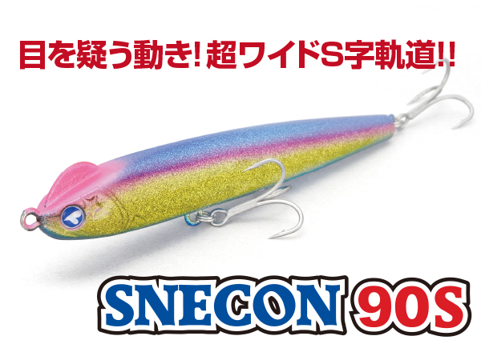
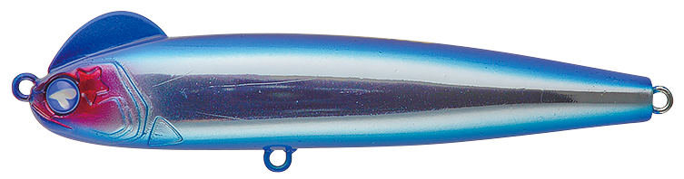
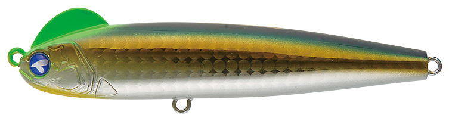
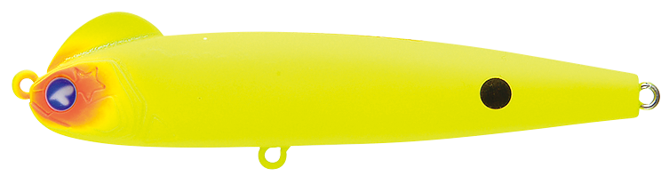
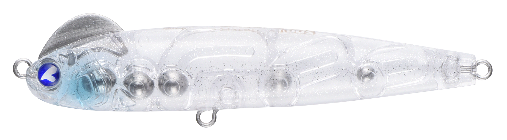
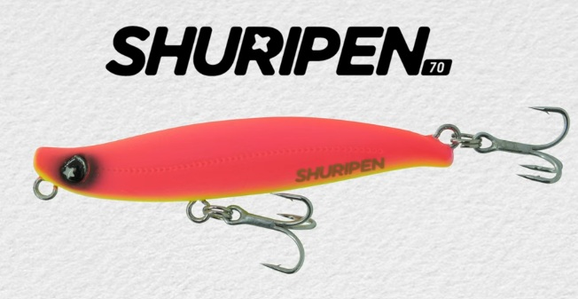
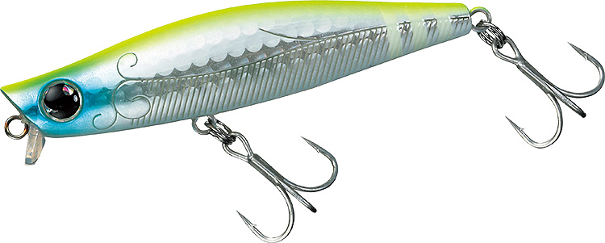

スネコン90S
（SNECON 90S）
スネコン90S（SNECON 90S）はBlueBlue（ブルーブルー）のシンキングペンシルです。
ワンボディでありながら、頭部のラダー構造と非安定型重心の採用により、リトリーブするだけでワイドなS字軌道を描くのが最大の特徴。川の流れを横切る小魚のような、流れになじんだ軌道で魚の反応を引き出すスネコンシリーズの90mmモデルです。

画像出典:BlueBlue公式HP
スペック
- メーカー
- BlueBlue（ブルーブルー）
- タイプ
- シンキングペンシル
- 全長
- 90mm
- 自重
- 15g
- レンジ
- 20cm
- フック
- #6×2
- リング
- #3
- ターゲット
- シーバス
- 価格
- 2,310円（税込）
▼今すぐチェック
スネコン90Sの特徴
巻くだけでワイドなS字。流れの変化が大きいほど、遠くに投げるほど動きが際立つシンペン
-
頭部のラダー構造で巻くだけでS字軌道
ワンボディながら、頭部のラダー構造と非安定型重心の組み合わせで、ただ巻くだけでワイドなS字軌道を描く。ジョイントルアーのような複雑な操作をしなくても、S字系の泳ぎを出せる。
-
水の動きの変化で動きが際立つ
S字の動きは、水の動きの変化があるほど、またアングラーから遠い位置にあるほど顕著に出る。流れのヨレや潮目など、変化のある場所でこそ真価を発揮する。
-
流れになじむ小魚のような軌道
川の流れを横切る小魚のような、流れになじんだ軌道を実現。フィッシュイーターの捕食本能を刺激し、圧倒的な反応の良さを引き出すことを狙った設計。
スネコン90Sの使い方
基本はスロー〜ミディアムのただ巻き。余計なロッドアクションを入れずに巻くだけで、ワイドなS字軌道が出る。
河川では、流れに対してクロスにキャストし、流れを横切らせるように巻くと、流れの変化を受けたときに動きが大きくなる。遠投して沖のヨレや潮目を通し、変化に差し掛かったところで巻きスピードを少し落としてじっくり見せるのが組み立ての基本です。
スネコン90Sの得意な状況
河川・河口・港湾の流れのある場所で、ヨレや潮目、明暗などの変化を通す状況が最大の出番。
ベイトが流れに乗って動いている状況や、直線的な動きのルアーに反応しないスレた魚に強い。流れが効いているほど持ち味が出るので、潮が動くタイミングに投入したい1本です。
ワンポイント
スネコンのS字はアングラーから遠いほど大きく出るので、足元まで同じ動きを期待せず、「沖の変化で食わせる」意識でコースを組み立てるのがコツです。
流れが緩い場所では、巻きスピードを少し上げると軌道がはっきりします。
人気カラー
スネコン90Sは全19色＋WEB限定カラーの展開。シーバス狙いでオススメのカラーを厳選して紹介します。

#01 ブルーブルーメーカー名を冠した定番のブルー系。日中や澄み潮でのナチュラルな見せ方に。

#20 イナッコ河川や河口で群れるイナッコに合わせたナチュラルカラー。

#04 マットチャートマット系のチャート。濁り潮やマズメ、ローライト時のアピールに。

#26 キラキラシラスクリア系のシラスカラー。小型ベイトのパターンやスレた魚に。
画像出典:BlueBlue公式HP
スネコン90Sに似ているルアー
-
 オルター73S
ピックアップ
詳細はこちら＞
オルター73S
ピックアップ
詳細はこちら＞
全長73mm・自重12.5gのシンキングペンシル。同じシンペン系で流れの中を引くルアーだが、スネコン90SはS字系、オルター73Sはケツ振り系という違いがある。リップ交換でレンジを変えたいときに。
-

シュリペン70 レガーレ 詳細はこちら＞レガーレの70mmシンキングペンシル。浮上アクションで表層をキープするバチ・マイクロベイト特化型で、スネコン90Sより小さいベイトに合わせたいときに持ち替えたい1本。
-

モアザン ガルバ73S ダイワ 詳細はこちら＞全長73mm・自重12.8gのリップ付きシンキングペンシル。水面直下〜20cmをスローにキープするのが得意で、スネコン90Sのレンジ（20cm）と近い層を、S字ではなくワイドスイングで見せたいときに。